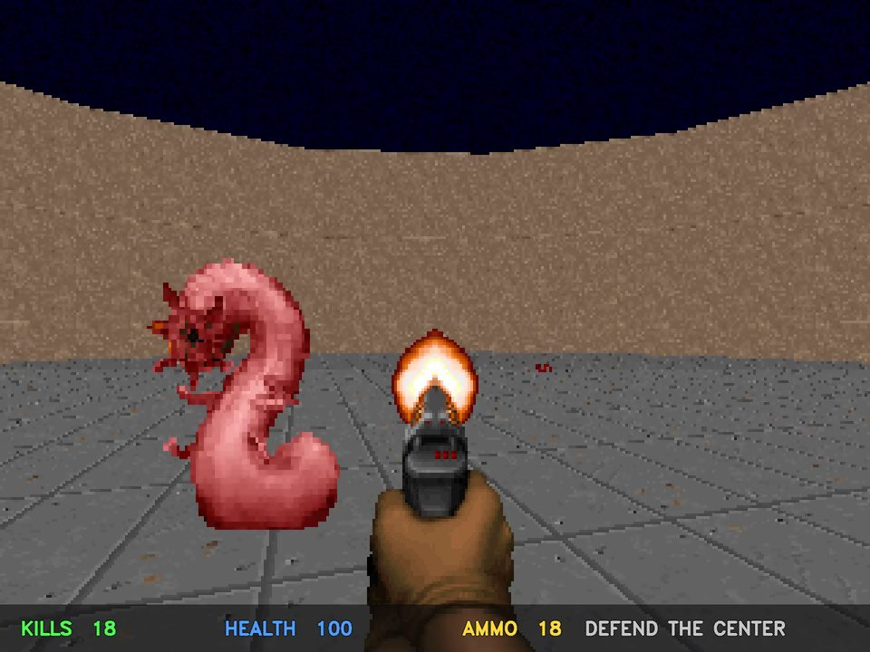
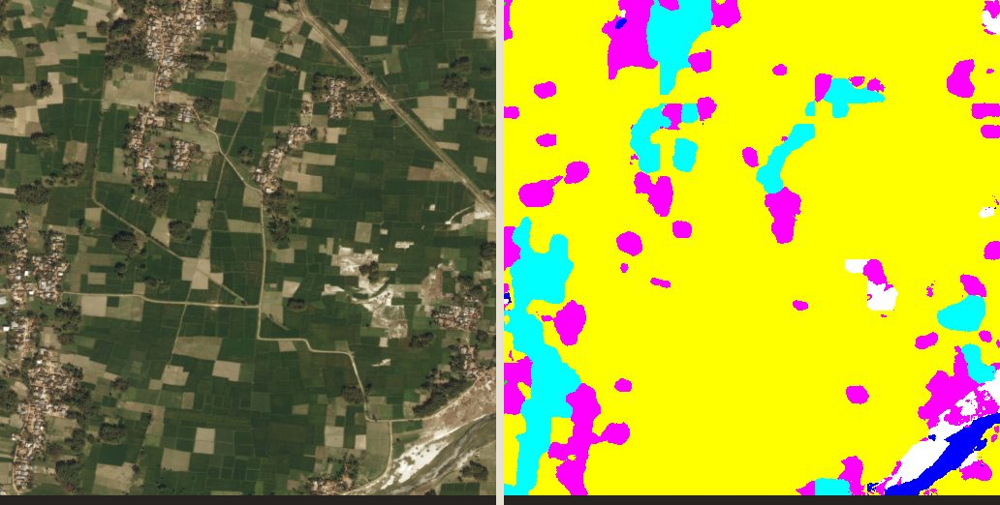

Deep-tech startup
★★★★★ 5.0
Quantum-inspired optimization
Validated the math and code of a novel optimizer and shaped it into an investor-ready product.
Applied AI studio · Now taking projects
We build AI that sees, senses and acts: vision, robotics, audio and sensor intelligence, and state-of-the-art R&D. Shipped end to end, from cloud to device.
01 — Track record
Delivered through Upwork for startups and hardware companies.
Validated the math and code of a novel optimizer and shaped it into an investor-ready product.
Controlled A/B experiments proving where a learning-rate scheduling product speeds up training.
Ongoing model development for our longest-running client. Details are private.
Real-time detection and video processing for an in-vehicle camera product.
Verified on our Upwork profile
02 — How we work
We review your data and goals and confirm what is achievable before you commit.
A working model on your data, with clear metrics.
Edge cases, optimization and accuracy checks.
Running on your stack, documented for your team.
03 — What we do
Systems that see, sense and act, designed for production from day one.
Quantized, optimized models running in real time on low-cost hardware.
Detection, tracking and scene understanding for vehicles, cameras and robots.
Defect detection from photos of good parts only, at line speed on a CPU.
State-of-the-art methods rebuilt from scratch, verified, and turned into products.
Reinforcement learning agents and simulation environments that learn by doing.
Models on raw audio and sensor streams: voice-fraud and anomaly detection.
04 — Featured production work
A confidential production system, shown by architecture only.
Catch fatigue, distraction and safety violations in real time, with no network and no video leaving the vehicle.
Parallel vision models on one low-power chip, turning frames into graded safety events with on-device video clips and logs.
05 — Lab work
Each one was built in-house, and the demos run right in your browser.

Autonomous agents · Automated game testing
An AI player that teaches itself any game just by watching the screen, with no rules and no game-specific code. Point it at a new build and it plays thousands of sessions overnight to surface bugs, exploits and difficulty spikes before your players do.

AI quality inspection
An automated inspector for production lines that learns from photos of good parts only, then pinpoints scratches and dents on anything that doesn't match. No defect library and no labelling, and it outperforms Intel's open-source reference.

Deepfake voice detection
Tells a real voice from an AI clone in seconds: a security layer for call centres, voice logins and identity checks. It catches cloning methods it has never seen before.
Game graphics enhancement
AI remastering for game graphics: old, blurry textures come back as crisp 4× HD in a fraction of a second each. Repeating tiles stay seamless, edges stay clean, and it outperforms the industry-standard upscaler.

Satellite intelligence
Turns raw satellite images into land-use maps, measuring farmland, forest, water and urban growth for agriculture, insurance and environmental work. Runs entirely in the browser, so imagery never leaves the device.
Sensor networks
Attack-resistant anomaly detection for sensor networks, with guaranteed limits on false alarms.
Training efficiency
An engine that adapts how models learn as they train, benchmarked against standard methods across frameworks.
Research · in progress
A new architecture that spots anomalies at every scale, developed with a university professor for a top computer vision conference.
Sports vision · in progress
Follows a fast-moving ball and hears every hit. Trained on simulated courts, so no manual labelling is needed.
Earlier work
Image generation, game-playing agents, an object detector built from scratch, and a deployed medical-fraud detector (94% accuracy).
All repositories ↗
Priyanshu Singh
Founder & Lead Engineer
06 — The studio
M2M stands for Model2Metal: taking AI from the research model all the way to the system it runs on. We build models from the ground up, validate them on real benchmarks, and deploy them on cloud or embedded hardware.
You work directly with the engineer building your system.
07 — Start a project
Share a few details about what you're building and we'll get back to you within a day.
Priyanshu SinghFounder & Lead Engineer. Every enquiry comes straight to me.
Prefer email? singhpriyaanshu308@gmail.com